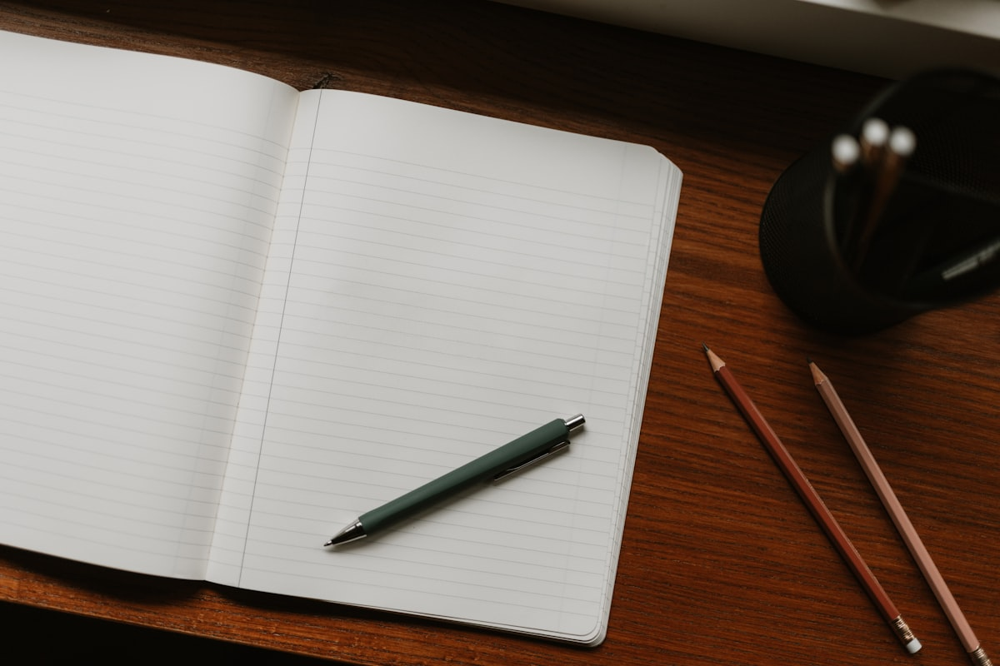

Cuadernos
Modelos lisos, rayados y punteados para clases o planificación.
Revisar cuadernosPapelería para estudiar y crear
Encuentra cuadernos, lápices y accesorios para acompañar tus proyectos.
Ver productos
Modelos lisos, rayados y punteados para clases o planificación.
Revisar cuadernosLápices, destacadores y marcadores de distintos colores.
Revisar lápicesAgendas, notas adhesivas y carpetas para ordenar tus tareas.
Revisar accesoriosConoce los materiales básicos para comenzar a practicar lettering.